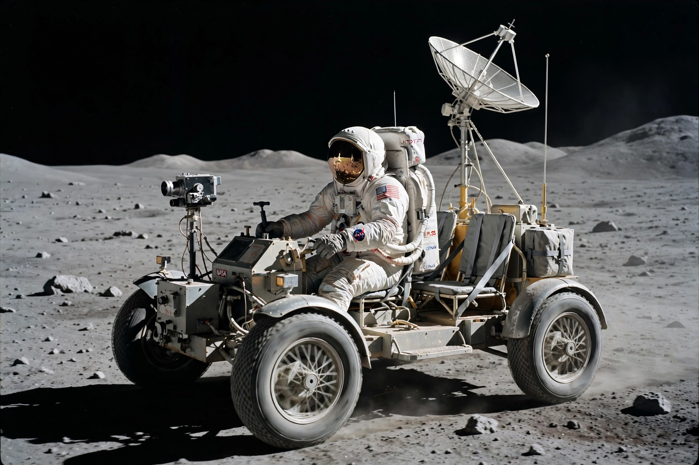

Lunar Roving Vehicle
From Wikipedia, the free encyclopedia
| Lunar Roving Vehicle | |
|---|---|
| Manufacturer | Boeing / Delco |
| Used on | Apollo 15, 16, 17 (1971–72) |
| Top speed | ~13 km/h (record ~17–18 km/h) |
| Range | Up to 35 km per mission |

The LRV at Hadley Rille, Apollo 15.The Lunar Roving Vehicle (LRV), or "Moon buggy", was a battery-powered four-wheeled rover used on the Moon during the last three Apollo missions — Apollo 15, 16 and 17 — in 1971 and 1972. Folded flat against the side of the lunar module for the journey, it unfolded on the surface into a two-seat car weighing 210 kg on Earth but able to carry twice its weight in astronauts, samples and equipment in lunar gravity.
Built by Boeing with General Motors' Delco, the LRV had wire-mesh wheels with titanium treads, a hand controller in place of a steering wheel, and silver-zinc batteries giving it a range of tens of kilometres. It multiplied the area the final Apollo crews could explore: Apollo 17's rover covered 35.7 km in total.
Operations and legacy
Navigation was by gyroscope and odometer, with Earth watching through a colour television camera that, on Apollo 17, captured the lunar module's ascent from the surface — remotely panned upward by flight controller Ed Fendell. All three rovers remain on the Moon where they were parked. The LRV's success informs today's designs: the Artemis-era Lunar Terrain Vehicle is in development to give future crews the same mobility at the lunar south pole.